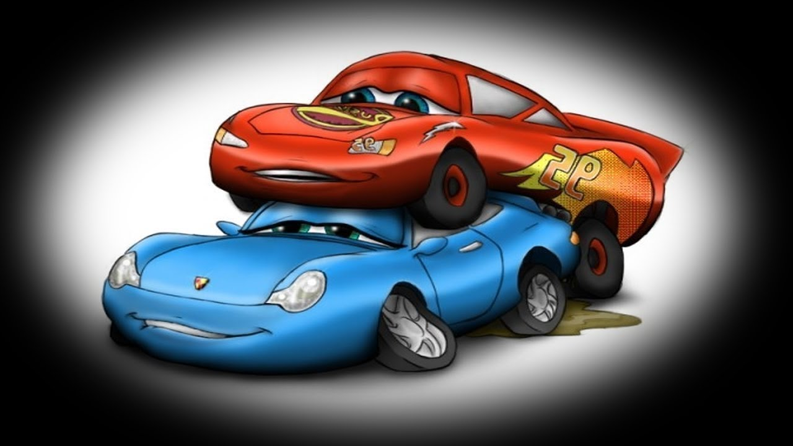

En Radiador Springs, McQueen se despierta, y se encuentra siendo llevado a la corte por destruir la carretera principal de Radiador Springs. El juez local, Doc Hudson, ordena a McQueen que abandone la ciudad inmediatamente, pero la otra gente del pueblo, incluyendo su abogada local, Sally Carrera, vota para que McQueen repare el camino como una muestra de poder para el servicio comunitario, en la que Doc está de acuerdo. McQueen es entonces ordenado a repavimente el camino, pero en su lugar, intenta escapar de la ciudad. Rápidamente es recapturado y obligado a reasfaltar el camino con el fin de recuperar su libertad. No lo hace correctamente al principio, pero al tomar un descanso, Doc trata de ayudarle a conducir, pero el novato lo rechaza. En el proceso, McQueen aprende sobre la historia de Radiador Springs y comienza a relacionarse con sus habitantes. Una grúa llamada Mate se hace amigo de él, y se enamora de Sally. También revela una historia inusual sobre Doc, quien se revela como un ex tres veces campeón de la Copa Pistón, cuya carrera terminó después de un grave accidente. Después de reparar el camino, y permanecer allí, McQueen es libre de salir de Radiator Springs, y reanudar su viaje a California. Sin embargo, retrasa a propósito su partida para mostrar aprecio por sus nuevos amigos realizando buenas acciones. Durante su tiempo en Radiador Springs, la personalidad de McQueen lentamente comienza a cambiar. Comienza a preocuparse por los demás en lugar de solo a sí mismo y ya no les falta el respeto. Tampoco es tan arrogante como antes estaba mientras estaba en la pista de carreras. Durante la carrera de desempate en California, McQueen es incapaz de dejar de pensar en Radiador Springs y sus nuevos amigos, lo que le hace perder la concentración. Pronto, se sorprende al ver que Doc Hudson y algunos de sus amigos lo han seguido y asumido el papel de su equipo de boxes. Inspirado en las palabras de animo de Doc, McQueen corre con renovada confianza. Cuando Hicks intenta desviarlo, se recupera realizando con orgullo movimientos que aprendió de Doc (particularmente el "giro" especial de Doc Hudson), y las habilidades en reversa de Mate, mientras McQueen estaba en Radiador Springs. Durante la última vuelta, la Copa Pistón está claramente al alcance de McQueen. Hicks, dándose cuenta de que está a punto de terminar en el último lugar, golpea a Weathers por detrás, provocando un peligroso accidente. En el Jumbotron de la pista, McQueen es testigo del accidente detrás de él, que es una reminiscencia del accidente que terminó la carrera de Doc hace 52 años antes. Con el fin de ayudar a Weathers a terminar su última carrera, McQueen se detiene repentinamente antes de llegar a la línea de meta, esencialmente perdiendo la victoria. McQueen es sin embargo elogiado por su deportividad generosa, tanto que el propietario del Equipo de carreras de Dinoco, Tex Dinoco se ofrece a contratarlo para suceder a Weathers. McQueen se niega, dándose cuenta de que debe quedarse con sus patrocinadores de Rust-eze en agradecimiento por lograr llevarlo a donde estaba. Tex respeta su decisión y en su lugar se ofrece a hacerle favores cada vez que la necesite. McQueen usa un favor para ganar un paseo en el helicóptero de Dinoco para Mate, cumpliendo el sueño de Mate. McQueen regresa a Radiador Springs para establecer su sede de carreras, poniendo la ciudad de nuevo en el mapa y trayendo el éxito a todos sus amigos. Reanuda su relación con Sally y se convierte en alumno de Hudson.
Seis años después de los acontecimientos de la segunda película, la historia comienza con McQueen, ahora siete veces veterano campeón de la Copa Pistón (2007-2015) y leyenda de las carreras, compitiendo en la Copa Pistón mientras se enfrentan a sus viejos amigos veteranos de carreras, Cal Weathers y Bobby Swift todos los que se toman bromas entre sí después de cada carrera. En la última vuelta de una carrera, Jackson Storm, un corredor de alta tecnología, aparece de la nada en la pista, rugiendo más allá de McQueen para ganar. Storm sigue ganando carrera tras carrera a lo largo de la temporada, y muchos corredores veteranos se ven inspirados a retirarse o fueron despedidos por sus patrocinadores para hacer espacio para la los novatos de la próxima generación - incluyendo Cal y Bobby. Durante la última carrera de la temporada en Los Ángeles, McQueen dexagado se esfuerza demasiado mientras intenta alcanzar a Storm, y se envía a sí mismo en un peligroso accidente como le pasó a Doc Hudson y a Strip "El Rey" Weathers. Sally, Mate, Sargento, Fillmore, Luigi y Guido se sorprenden de horror al ver el accidente de McQueen. La premisa de la película gira en torno a que McQueen se recuperó por cuatro meses del accidente que ocurrió anteriormente y fue entrenado por Cruz Ramírez, una técnica y fan de toda la vida de McQueen, durante la desbanda con la esperanza de regresar a su carrera de carreras. Su principal motivación para volver a las carreras es poder entrar en la carrera de las 500 de Florida y derrotar a Storm, después de recibir un ultimátum por el nuevo patrocinador Sterling para retirarse permanentemente a una vida como portavoz pagado si pierde su próxima carrera. Sterling estaba planeando que se retirara de todos modos para poder ganar dinero con las mercancías de jubilación de McQueen, pero escondió su naturaleza y fingió ser un fan. Después de varios intentos fallidos de entrenamiento, incluyendo dañar el simulador de Sterling y participar en un derby de demolición, McQueen decide buscar al viejo jefe de Doc, Smokey, y finalmente se encuentra con él en el Autódromo de Thomasville en la antigua ciudad natal de Doc, en lo que parece ser las Grandes Montañas Humeantes. Entrenado en inteligencia y velocidad, McQueen corre la primera mitad de las 500 de Florida, con Smokey como su jefe de tripulación, antes de retirarse y darle a Cruz una oportunidad de estrellato, con él como jefe de tripulación. McQueen y Cruz comparten la victoria debido a que Rayo comienza la carrera, y finalmente un patrocinio bajo la marca fusionada Dinoco-Rust-eze Racing Center, por lo que gana la apuesta con Sterling y decide seguir compitiendo, y Cruz se convierte en su alumna. McQueen termina la película con una carrera con Cruz en el Monte de Willy de Radiador Springs, ahora un mentor de jóvenes talentos mientras corre la carrera ocasional de la Copa Pistón.
there is only web.
Fuente: Wikipedia